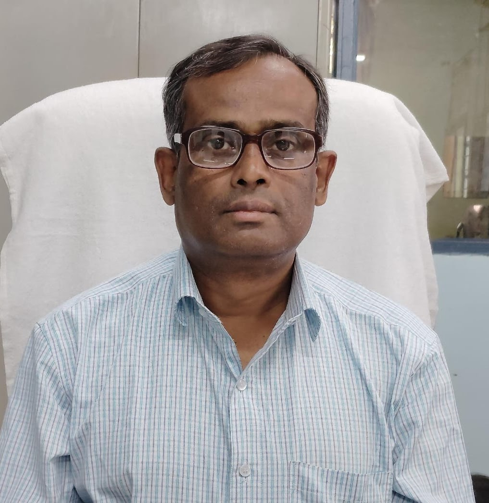

ISDRC Members
Meet the team members and contributors of the Innovation and Skill Development Research Centre.
Faculties

Researchers

Students
Advisory Board
❤️ Join Our Team
Interested in becoming part of the ISDRC community? We welcome passionate students, researchers, and faculty members who are committed to innovation and skill development.
Register as a Member